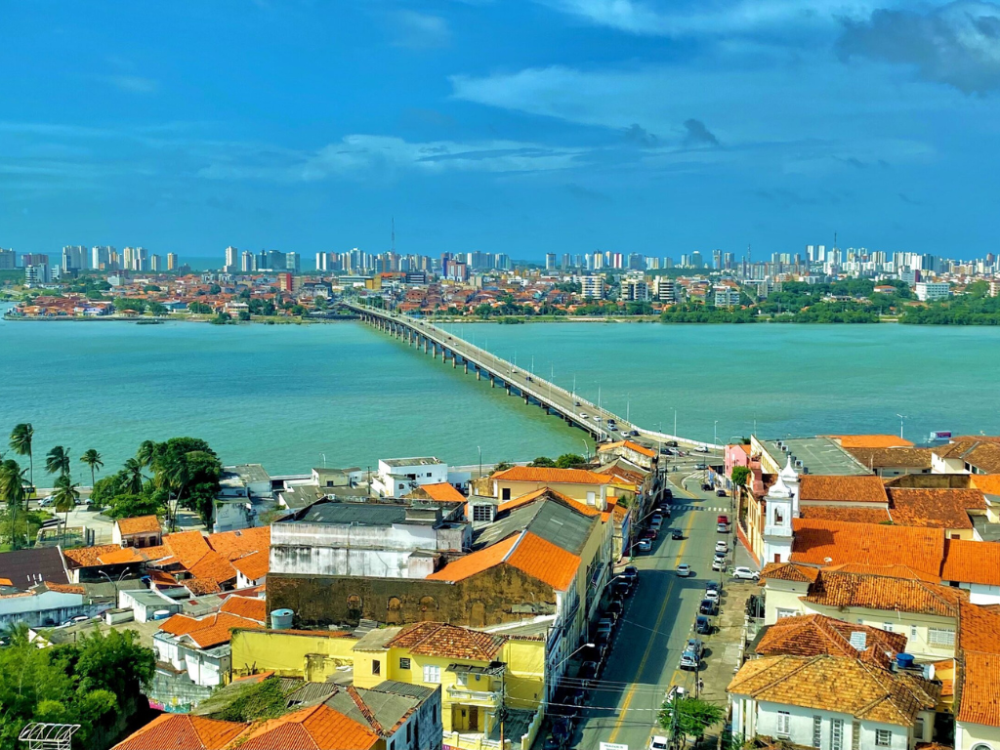

Apresentando uma transição geográfica única entre a aridez do sertão nordestino e a exuberância da floresta amazônica, o estado abriga o ecossistema espetacular dos Lençóis Maranhenses, repleto de dunas de areia branca e lagoas de água doce. Sua capital, São Luís, protege um dos maiores conjuntos arquitetônicos de origem portuguesa da América Latina, famoso por seus casarões azulejados, que servem de palco para as tradicionais e vibrantes festas juninas do Bumba Meu Boi.

Voltar